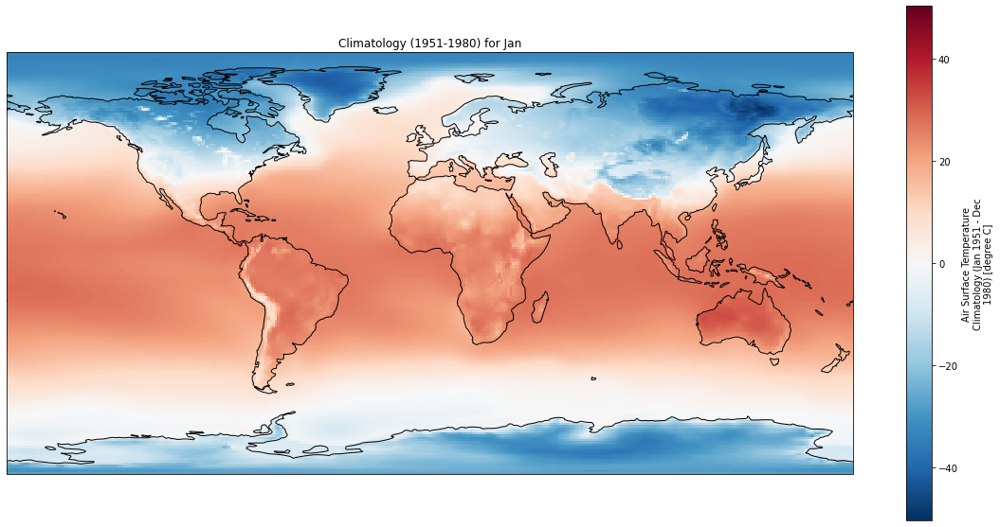
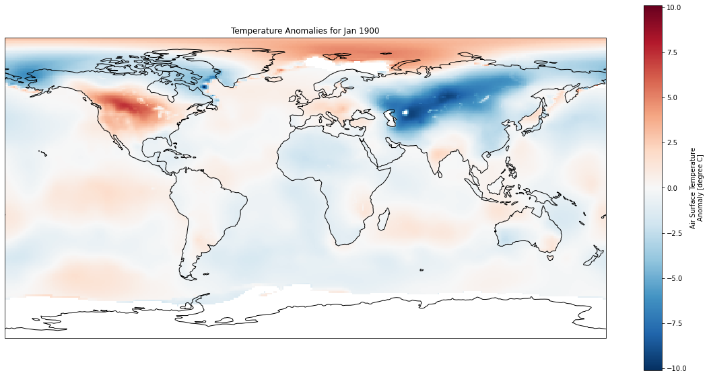
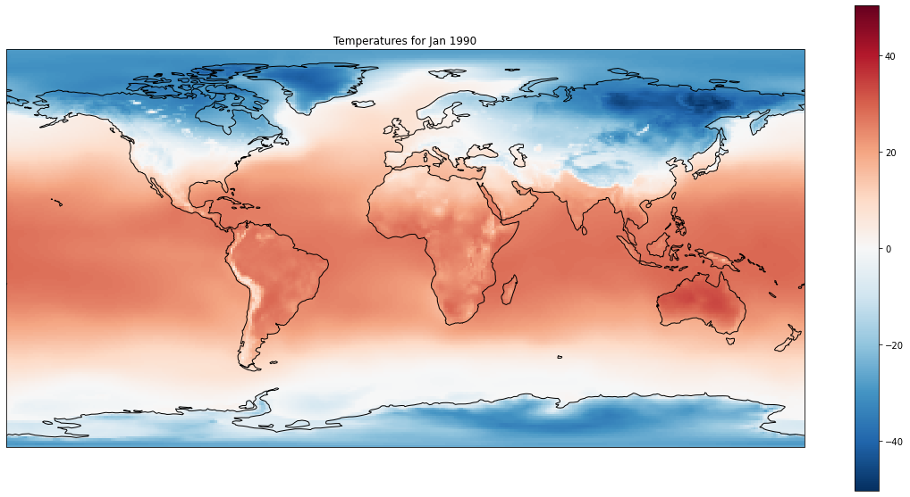

Plot global temperature anomalies from Berkeley Earth
Contents
Plot global temperature anomalies from Berkeley Earth¶
© Von P. Walden, Washington State University
The data used in this notebook are from Berkeley Earth: Land_and_Ocean_LatLong1.nc
import matplotlib.pyplot as plt
import cartopy.crs as ccrs
import pandas as pd
import xarray as xr
Working from your local computer¶
If you are running this notebook from your local computer, you will need to:
Download a large (400 MB) data file from Berkeley Earth by clicking on this link
Edit the code cell below by replacing ‘../Land_and_Ocean_LatLong1.nc’ with the pathname to the data file on your local hard drive.
be = xr.open_dataset('../Land_and_Ocean_LatLong1.nc')
be
<xarray.Dataset>
Dimensions: (longitude: 360, latitude: 180, time: 2064, month_number: 12)
Coordinates:
* longitude (longitude) float32 -179.5 -178.5 -177.5 ... 177.5 178.5 179.5
* latitude (latitude) float32 -89.5 -88.5 -87.5 -86.5 ... 87.5 88.5 89.5
* time (time) float64 1.85e+03 1.85e+03 ... 2.022e+03 2.022e+03
Dimensions without coordinates: month_number
Data variables:
land_mask (latitude, longitude) float64 1.0 1.0 1.0 1.0 ... 0.0 0.0 0.0
temperature (time, latitude, longitude) float32 ...
climatology (month_number, latitude, longitude) float32 ...
Attributes:
Conventions: Berkeley Earth Internal Convention (based on CF-1.5)
title: Native Format Berkeley Earth Surface Temperature Anomaly Field
institution: Berkeley Earth Surface Temperature Project
comment: This file contains surface temperature anomaly field gridde...xarray.Dataset
- longitude: 360
- latitude: 180
- time: 2064
- month_number: 12
- longitude(longitude)float32-179.5 -178.5 ... 178.5 179.5
- units :
- degrees_east
- standard_name :
- longitude
- long_name :
- Longitude
array([-179.5, -178.5, -177.5, ..., 177.5, 178.5, 179.5], dtype=float32)
- latitude(latitude)float32-89.5 -88.5 -87.5 ... 88.5 89.5
- units :
- degrees_north
- standard_name :
- latitude
- long_name :
- Latitude
array([-89.5, -88.5, -87.5, -86.5, -85.5, -84.5, -83.5, -82.5, -81.5, -80.5, -79.5, -78.5, -77.5, -76.5, -75.5, -74.5, -73.5, -72.5, -71.5, -70.5, -69.5, -68.5, -67.5, -66.5, -65.5, -64.5, -63.5, -62.5, -61.5, -60.5, -59.5, -58.5, -57.5, -56.5, -55.5, -54.5, -53.5, -52.5, -51.5, -50.5, -49.5, -48.5, -47.5, -46.5, -45.5, -44.5, -43.5, -42.5, -41.5, -40.5, -39.5, -38.5, -37.5, -36.5, -35.5, -34.5, -33.5, -32.5, -31.5, -30.5, -29.5, -28.5, -27.5, -26.5, -25.5, -24.5, -23.5, -22.5, -21.5, -20.5, -19.5, -18.5, -17.5, -16.5, -15.5, -14.5, -13.5, -12.5, -11.5, -10.5, -9.5, -8.5, -7.5, -6.5, -5.5, -4.5, -3.5, -2.5, -1.5, -0.5, 0.5, 1.5, 2.5, 3.5, 4.5, 5.5, 6.5, 7.5, 8.5, 9.5, 10.5, 11.5, 12.5, 13.5, 14.5, 15.5, 16.5, 17.5, 18.5, 19.5, 20.5, 21.5, 22.5, 23.5, 24.5, 25.5, 26.5, 27.5, 28.5, 29.5, 30.5, 31.5, 32.5, 33.5, 34.5, 35.5, 36.5, 37.5, 38.5, 39.5, 40.5, 41.5, 42.5, 43.5, 44.5, 45.5, 46.5, 47.5, 48.5, 49.5, 50.5, 51.5, 52.5, 53.5, 54.5, 55.5, 56.5, 57.5, 58.5, 59.5, 60.5, 61.5, 62.5, 63.5, 64.5, 65.5, 66.5, 67.5, 68.5, 69.5, 70.5, 71.5, 72.5, 73.5, 74.5, 75.5, 76.5, 77.5, 78.5, 79.5, 80.5, 81.5, 82.5, 83.5, 84.5, 85.5, 86.5, 87.5, 88.5, 89.5], dtype=float32) - time(time)float641.85e+03 1.85e+03 ... 2.022e+03
- units :
- year A.D.
- standard_name :
- time
- long_name :
- Time
array([1850.041667, 1850.125 , 1850.208333, ..., 2021.791667, 2021.875 , 2021.958333])
- land_mask(latitude, longitude)float64...
- units :
- none
- standard_name :
- land_mask
- long_name :
- Land Mask
- valid_min :
- 0.0
- valid_max :
- 1.0
array([[1., 1., 1., ..., 1., 1., 1.], [1., 1., 1., ..., 1., 1., 1.], [1., 1., 1., ..., 1., 1., 1.], ..., [0., 0., 0., ..., 0., 0., 0.], [0., 0., 0., ..., 0., 0., 0.], [0., 0., 0., ..., 0., 0., 0.]]) - temperature(time, latitude, longitude)float32...
- units :
- degree C
- standard_name :
- surface_temperature_anomaly
- long_name :
- Air Surface Temperature Anomaly
- valid_min :
- -20.13358547046764
- valid_max :
- 25.779894588495726
[133747200 values with dtype=float32]
- climatology(month_number, latitude, longitude)float32...
- units :
- degree C
- standard_name :
- surface_temperature_climatology
- long_name :
- Air Surface Temperature Climatology (Jan 1951 - Dec 1980)
- valid_min :
- -68.87224481059923
- valid_max :
- 38.21117653490976
[777600 values with dtype=float32]
- Conventions :
- Berkeley Earth Internal Convention (based on CF-1.5)
- title :
- Native Format Berkeley Earth Surface Temperature Anomaly Field
- institution :
- Berkeley Earth Surface Temperature Project
- comment :
- This file contains surface temperature anomaly field gridded on a 1� (longitude) by 1� (latitude) grid-box basis.
Plot geographic distribution of 1951-1980 climatology¶
# Select a particular month to view
month = 'Jan'
#month = 'Jul'
months = ['Jan', 'Feb', 'Mar', 'Apr', 'May', 'Jun', 'Jul', 'Aug', 'Sep', 'Oct', 'Nov', 'Dec']
fig = plt.figure(figsize=(20,10))
ax = plt.axes(projection=ccrs.PlateCarree())
ax.coastlines()
be.climatology[months.index(month)].plot(ax=ax)
plt.title('Climatology (1951-1980) for ' + month);

Plot geographic distribution of temperature anomalies for given year and month¶
# Select a particular year and month to view
year = 1990
month = 'Jan'
#month = 'Jul'
months = ['Jan', 'Feb', 'Mar', 'Apr', 'May', 'Jun', 'Jul', 'Aug', 'Sep', 'Oct', 'Nov', 'Dec']
fig = plt.figure(figsize=(20,10))
ax = plt.axes(projection=ccrs.PlateCarree())
ax.coastlines()
(be.temperature[months.index(month)+((year-1850)*12)]).plot(ax=ax, clim=[-10, 10])
plt.title('Temperature Anomalies for ' + month + ' ' + str(year));

Plot geographic distribution of actual temperatures for given year and month¶
# Select a particular year and month to view
year = 1990
month = 'Jan'
#month = 'Jul'
months = ['Jan', 'Feb', 'Mar', 'Apr', 'May', 'Jun', 'Jul', 'Aug', 'Sep', 'Oct', 'Nov', 'Dec']
fig = plt.figure(figsize=(20,10))
ax = plt.axes(projection=ccrs.PlateCarree())
ax.coastlines()
(be.temperature[months.index(month)+((year-1850)*12)] + be.climatology[months.index(month)]).plot(ax=ax, clim=[-10, 10])
plt.title('Temperatures for ' + month + ' ' + str(year));

Calculate global annual temperature anomalies¶
# Select a particular year and month to view
# !! Depending on how many years you choose to analyze, this COULD TAKE TENS OF SECONDS to complete.
beginning_year = 1951
ending_year = 1980
months = pd.date_range(start=str(beginning_year), end=str(ending_year+1), freq='M')
data = []
for month in months:
#print(month.month)
data.append(be.temperature[month.month+((month.year-1850)*12)].mean())
Tanomalies = xr.DataArray(data, coords={'month': months})
fig = plt.figure(figsize=(20,10))
Tanomalies.plot()
plt.grid()
plt.xlabel('Month');
plt.ylabel('Temperature anomaly (C)');
plt.title('Global monthly temperature anomaly between ' + str(beginning_year) + ' and ' + str(ending_year));

Calculate longitudinally-averaged temperature anomalies¶
# Select the latitude range to average over
beginning_latitude = -5
ending_latitude = 5
# Select a particular year and month to view
# !! Depending on how many years you choose to analyze, this COULD TAKE TENS OF SECONDS to complete.
beginning_year = 1950
ending_year = 2020
months = pd.date_range(start=str(beginning_year), end=str(ending_year+1), freq='M')
data = []
for month in months:
#print(month.month)
data.append(be.temperature[month.month+((month.year-1850)*12)].sel(latitude=slice(beginning_latitude, ending_latitude)).mean())
Tanomalies = xr.DataArray(data, coords={'month': months})
fig = plt.figure(figsize=(20,10))
Tanomalies.plot()
plt.grid()
plt.xlabel('Month');
plt.ylabel('Temperature anomaly (C)');
plt.title('Equatorial temperature anomaly between ' + str(beginning_year) + ' and ' + str(ending_year));